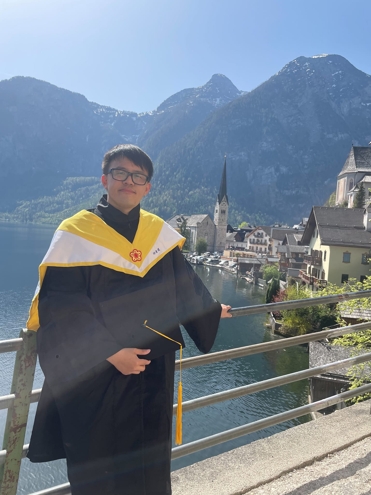

個人資料 Personal Profile
More personal details please check here



My Personal Info
- Name: KOW PU YUN 邱普運
- Birthday: 1995/03/02
- Languange: Mandarin, English, Malay
Study Interest:
- Machine learning
- Deep Learning
- Water Resources Management
- Environmental Science
Education:
- National Taiwan University, Department of Bioenvironmental System Engineering, Bachelor's Degree (2014/9-2018/9)
- National Taiwan University, Department of Bioenvironmental System Engineering, Master's Degree (2018/9-2020/9)
- National Taiwan University, Department of Bioenvironmental System Engineering, PhD (2020/9-2023/12)
Skills:
- Machine Learning: tensorflow, keras, sklearn
- Programming language: python, matlab, C#, html
- Minor skills: user interface design, web design